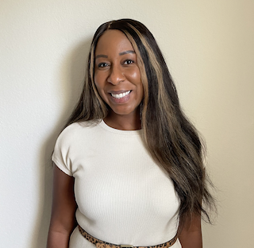

Stephanie Engel

Engineering Leadership | Development Operations | Risk Mitigation
I am an empathetic engineering leader (and previous music educator) who believes that great teamwork is achieved through collaboration and transparency.
I am also a fast learner who has a proven track record to develop skills needed for the job, on the job.
Professional Experience
Datavant, San Francisco, CA (Remote)
1/2024 - 9/2024
Senior Software Engineer
- Created custom tooling that allowed Product Engineers to streamline Kubernetes resource configuration and allocation for locally hosted AWS development environments. This solution reduced the local dev setup time by 80%
- Collaborated with engineers (300+ engineers across 25+ teams) to establish best practices and processes across a monolithic codebase
- Implemented Datadog Synthetic observability tests for a repository responsible for 60% of Datavant's revenue
- Collaborated with platform team members and implemented tooling to migrate all of Datavant's Kubernetes infrastructure systems from version 1.23 to 1.29 to maintain FedRamp compliance
Technologies: AWS, Docker, Kubernetes, Devcontainers, Helm, Terraform, Python, Postgres
Accenture, Austin, TX (Remote)
5/2022 - 1/2024
Technology Architecture Manager
- Engineering lead for Starburst partnership, mentoring and training team members while also facilitating weekly working sessions with cloud infrastructure stakeholders at various client locations
- Partnered with stakeholders from Meta and Microsoft to ensure custom tooling efficiently leveraged infrastructure from both companies
- Built our engineering team’s first Azure development cluster at Meta - empowering engineers to test proposed infrastructure prior to any production deployment
- Created and maintained production infrastructure which was instrumental in ensuring Facebook AI researchers (FAIR) can execute their AI training models (using OPT-175B) without interruption
- Created and maintained Nvidia DCGMI tests to proactively monitor and diagnose issues in production cluster nodes
Technologies: AWS, Azure, Python, Bash, Slurm, Terraform, Linux, Starburst, Docker, Kubernetes, Helm, Postgres, Hive, and Range
The Zebra, Austin, TX (Remote)
7/2022 - 5/2023
Software Development Automation Manager
- Owned and created the test automation strategy across 10 cross-functional teams, empowering engineers to methodically apply the testing pyramid
- Mentored and worked alongside a team of 4 SDETs and 20 Quality Engineers by building automated UI and API frameworks to test production-facing web clients and services
- Defined software engineering best practices for the, overall, QE team and communicated SLO's, SLI's, and SLA's to internal stakeholders
- Worked closely with SRE's to enhance GitLab pipelines and repair build failures
Technologies: Python, Selenium, Jenkins, Docker, Kubernetes
InfluxData, San Francisco, CA (Remote)
9/2019 - 6/2021
Senior SDET
- Led and coordinated API testing, implementation, and documentation efforts across globally distributed team
- Developed API test framework (with 98% code coverage) to ensure the responsiveness and stability of both Open Source and Enterprise product applications
Technologies: JavaScript, Cypress, Mocha, Chai, SuperTest, Python, PyTest, Go, Docker, Kubernetes, Quay, Jenkins, CircleCI, AWS
Olo, New York, NY (Remote)
6/2018 - 8/2019
Senior SDET
- Led and coordinated testing efforts across globally distributed team for Olo’s progressive web application (Expo)
- Within first three months on the team, created processes, documentation, and test infrastructure to support each phase of the software development lifecycle
- Created E2E automation framework which reduced manual regression testing time by 75%
- Created CI/CD pipeline builds to run on Dev, QA, and Staging environments
Technologies: JavaScript, TestCafe, MS SQL Server, AWS, Postman, TeamCity, Octopus, Raygun, DataDog, SumoLogic, XCode, Android Studio, HipTest, Adaptavist
Gartner (Software Advice), Austin, TX
2/2017 - 5/2018
Senior Automation Engineer
- Developed automation for E2E, API, and Load testing to ensure stability and assess A/B experiments of Software Advice marketing site
- Created and maintained CI/CD builds for specific functional areas
- Deployed production releases and created process documentation which streamlined deployments by 200%
Technologies: PHP, Selenium Webdriver, Selenium Server, Selenium Grid, SauceLabs, PhantomJS, JMeter, Jenkins, Docker, MySQL, Postman, GitLab, GitBash, New Relic, PhpStorm, Jira, Android Studio, XCode, TestR
WellSky (formerly Kinnser Software), Austin, TX
12/2011 – 1/2017
Senior QA Engineer
- Led and coordinated internal processes, team testing efforts, and deployment activities across Engineering, Sales, Trainers, Implementation, and Enterprise Support teams
- Mentored and trained QA team members in best practices, testing process, product knowledge, local test environment management, and product deployment activity
Technologies: Ruby, RubyMine, Watir Webdriver, Jenkins, MS SQL Server, GitHub, GitBash, Fogbugz
Leander ISD / Denton ISD, Leander / Denton TX
6/2018 - 8/2019
Senior SDET
- Led and coordinated internal processes, team testing efforts, and deployment activities across Engineering, Sales, Trainers, Implementation, and Enterprise Support teams
- Mentored and trained QA team members in best practices, testing process, product knowledge, local test environment management, and product deployment activity
Technologies: Finale, SmartMusic
Education & Certifications
- Studied Computer Programming – Austin Community College, Austin, TX
- Master of Music, Performance – University of North Texas, Denton, TX
- Bachelor of Music, Performance - University of South Florida, Tampa, FL
- Datadog Certificates (Developer 101, Foundation, Observability, The Learning Environment)
- AWS Knowledge: Cloud Essentials certificate
- Starburst Voyager Certified Mission Specialist certificate
- Certified Scrum Master